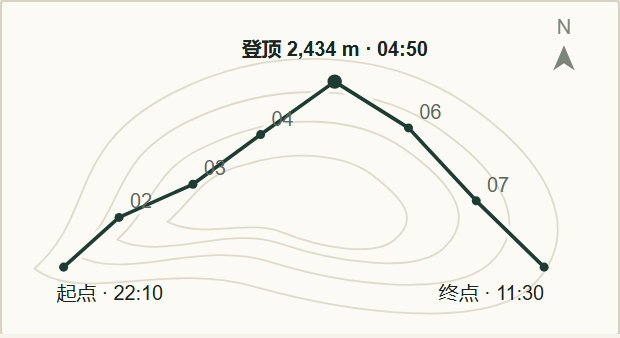

森林绿 + 暖石色
深绿承担品牌与主操作；暖白 / 石色做阅读地面；低饱和苔色、蓝灰做数据辅助。没有荧光绿和装饰渐变。
- 借入 F
- 森林绿、暖纸、陶土警示、低饱和色板。
- 不借
- 橙色主按钮、整屏深绿仪表盘。
从 8 张户外 App 参考图提炼共同视觉语言；不复制品牌、布局或导航产品外壳。以 F 的纸 / 森林 / 陶土为唯一基线，完成四页视觉冻结。
深绿承担品牌与主操作；暖白 / 石色做阅读地面；低饱和苔色、蓝灰做数据辅助。没有荧光绿和装饰渐变。
自然光与真实地貌，照片承担第一识别；白字只压在暗部，并使用可控 scrim。不是图库笑脸和过度 HDR。
活动 / 地点名用衬线建立记忆点；其余 UI 用无衬线。一个大读数，数字等宽，单位和标签退后。
用发丝线、留白与纸色分层，而不是把每块内容装进圆角卡；地图、剖面、表格是数据工具，不是背景装饰。
纸 / 森林 / 陶土色板；满幅摄影；衬线只给活动名；纸带分区和发丝线；单一实心 CTA；一个主读数。
三级文字从 #828A7D 提到 #5D685C，二次文字提到 #4C584E；筛选 / 搜索 / 小按钮统一 44px；字级和缩略图收回 token；补入路线示意、详情返回与顶部搜索。
参考产品的深色大块、圆角卡墙、onboarding、导航地图外壳与社区 feed。F 的路线示意只画行程节点、明确“非导航”；真实地图仍由生产 route snapshot 提供。
泰安古镇 · 五龙沟 · 都江堰
入门 · 12.4 km · ↑ 640 m · ¥50
状态 = 词 + 方点 + 位置；颜色只做强调。陶土只留给警示与待办；主操作永远用动作绿。

照片 CTA、单一读数 18.6 km、路线索引与月份行。

返回 + 首屏决策事实；照片、概览、费用与倒计时形成判断链。

任务前置；下一步、现场计数、名单与分车按执行顺序。

出发窗口先于曲线；曲线、逐时判定与决策建议同一数据源。

等高线、路线、8 个节点与起点 / 登顶 / 终点，明确标注“路线示意 · 非导航 · 非实测轨迹”；剖面与逐时行程仍在下方，共用同一组数据。真实地图由生产 route snapshot 提供，不在实验室伪造坐标。
唯一基线、四页品牌一致性、层级与节奏、窄屏可读性、关键状态和证据链均已通过。已知边界：天气图逐小时热区 6px（精确选择走 44px 表格行，生产迁移改为拖拽 scrubber）；详情 375 的倒计时需一次短滚动；角色 / 权限、真实地图与气象 API 属于生产功能清单，不在本轮视觉改动内。证据：F-final 44 张、24/24 DOM、375/390/414 零横向溢出、文字对比 4.56–6.74:1、关键触控 44px。生产仓库 D:\OurTrail 未改动。